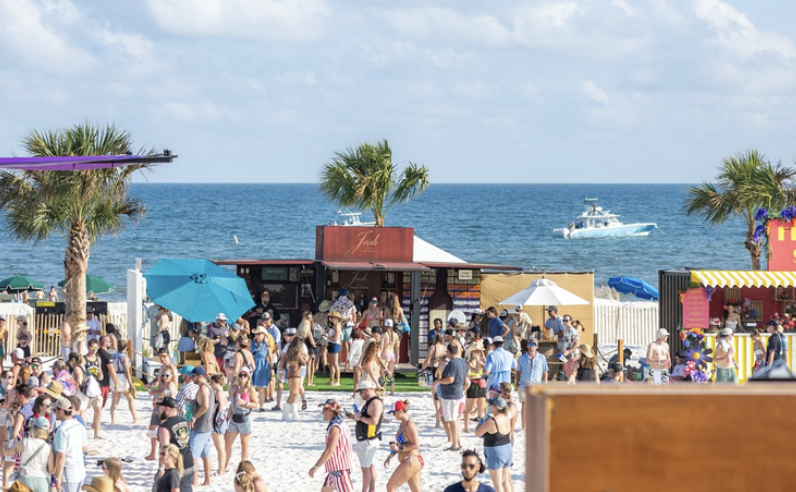
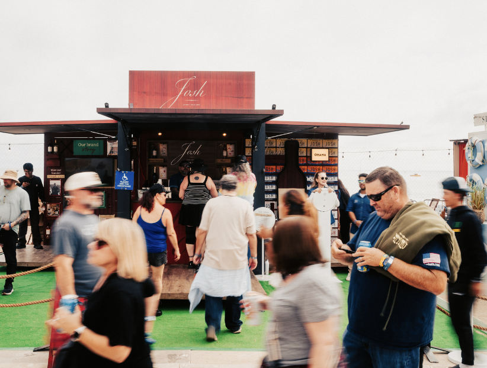
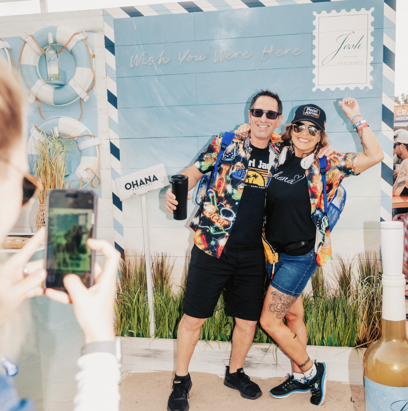
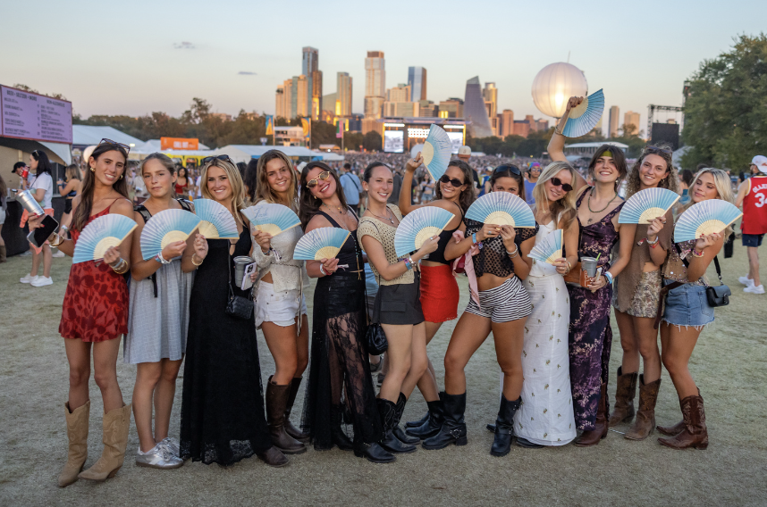
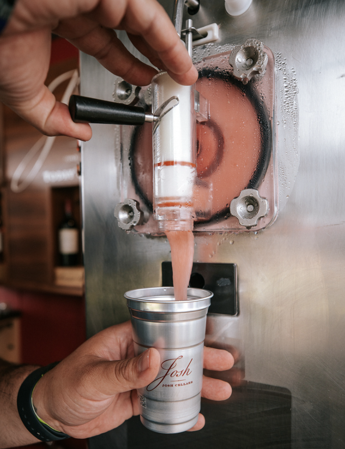
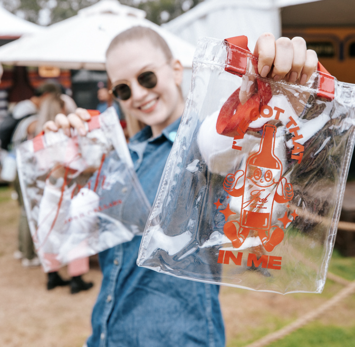
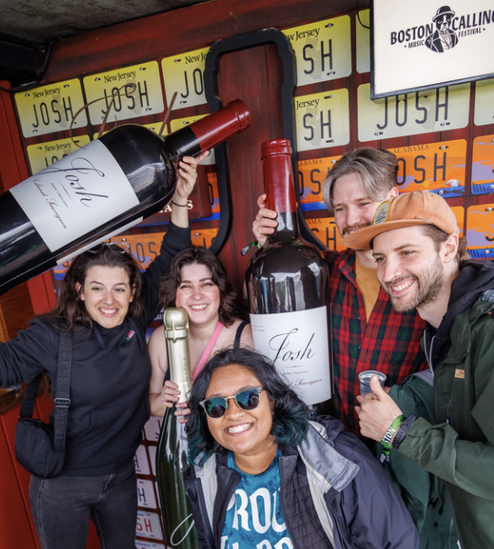

Josh Cellars' core consumer was aging out of the brand, and wine as a category carried a stigma: low-energy, low-occasion, not for younger drinkers. The brand needed a way into a new recruitment consumer — and a new context that reframed what wine could look and feel like.
Sole agency lead responsible for building the brand's first-ever experiential program of this scale — end-to-end, from strategy development through festival partnership negotiations, activation design, on-site execution, and full budget ownership.








The strategic premise was straightforward: wine doesn't have a festival problem, it has a context problem. Put it in the right environment — surrounded by music, energy, and a consumer who's already in a discovery mindset — and the category barrier disappears. Experiential marketing became the tool for audience recruitment and brand reframing.
Working as the sole agency lead, I built the program from zero: defining the festival strategy, selecting and negotiating with partners, designing the activation footprint, and owning execution across nine festival stops. Partners included Live Nation, Superfly, and AEG — bringing access to a combined attendance of over one million people.
On the ground, the activation introduced high-energy wine experiences including Frosé and the brand's Seaswept innovation — formats designed to meet festival consumers where they were, not where wine typically lives. Each activation was built to drive both immediate trial and earned social content.
The program's success wasn't just measured in sales. It repositioned the brand's role within the agency relationship entirely: I was named central agency of record for 360 amplification efforts and given a mandate to expand the program into Coachella, Stagecoach, Lollapalooza, and the Miami Open as part of a five-year experiential expansion plan.
(+16.2% YoY)
(+26.0% YoY)
(+9.3% YoY)
(Up from $2.5M)
Central Agency of Record
Coachella, Stagecoach,
Lollapalooza, Miami Open